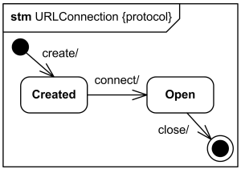
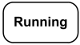
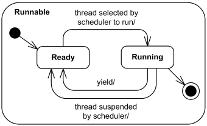
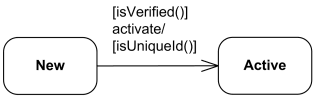

State Machine Diagrams Reference
| Notation | Description |
|---|---|
| Behavioral State Machine | |

High level behavioral state machine for bank ATM |
Behavioral state machine is specialization of behavior and is used to specify discrete behavior of a part of designed system through finite state transitions. The state machine formalism used in this case is an object-based variant of Harel statecharts. State machine could be rendered in the frame labeled as state machine or stm in abbreviated form. |
| Simple State | |

Simple state Waiting for Customer Input. |
A simple state is a state that does not have substates. Simple state is shown as a rectangle with rounded corners and the state name inside the rectangle. |

Simple state Waiting for Customer Input with name and internal activities compartments. |
Internal activities compartment holds a list of internal actions or state (do) activities (behaviors) that are performed while the element is in the state. Labels reserved for special activity purposes are:
|
| Composite State | |

Simple composite state Serving Customer has two substates. |
Composite state is state that has substates (nested states). UML 2.4 defines composite state as the state which contains one or more regions. A state is not allowed to have both regions and a submachine. Simple composite state contains just one region. |

Composite state Serving Customer with decomposition hidden. |
The composite state may be shown with hidden decomposition. It is represented by a simple state graphic with a special "composite" icon, usually in the lower right-hand corner. This icon consists of two horizontally placed and connected states and is an optional visual cue that the state has a decomposition that is not shown in this particular diagram. |
| Initial Pseudostate | |

Initial pseudostate transitions to Waiting for User Input state. |
An initial pseudostate represents a default vertex that is the source for a single transition to the default state of a composite state. There can be at most one initial vertex in a region. The outgoing transition from the initial vertex may have a behavior, but not a trigger or guard. An initial pseudostate is shown as a small solid filled circle. |
| Terminate Pseudostate | |
|
Transition to terminate pseudostate. |
Terminate pseudostate implies that the execution of this state machine by means of its context object is terminated. The state machine does not exit any states nor does it perform any exit actions other than those associated with the transition leading to the terminate pseudostate. Entering a terminate pseudostate is equivalent to invoking a DestroyObjectAction. A terminate pseudostate is shown as a cross. |
| Entry Point | |

Entry point user entry. |
Entry point pseudostate is an entry point of a state machine or composite state. In each region of the state machine or composite state it has at most a single transition to a vertex within the same region. An entry point is shown as a small circle on the border of the state machine diagram or composite state, with the name associated with it. |
| Exit Point | |

Exit point user exit. |
Exit point pseudostate is an exit point of a state machine or composite state. Entering an exit point within any region of the composite state or state machine referenced by a submachine state implies the exit of this composite state or submachine state and the triggering of the transition that has this exit point as source in the state machine enclosing the submachine or composite state. An exit point is shown as a small circle with a cross on the border of the state machine diagram or composite state, with the name associated with it. |
| Choice | |

Select outgoing transition based on condition. |
Choice pseudostate realizes a dynamic conditional branch. It evaluates the guards of the triggers of its outgoing transitions to select only one outgoing transition. A choice pseudostate is shown as a diamond-shaped symbol. |

Choice based on guards applied to the value inside diamond. |
If more than one of the guards evaluates to true, an arbitrary one is selected. If none of the guards evaluates to true, then the model is considered ill-formed. To avoid this define one outgoing transition with the predefined "else" guard when appropriate. If all guards associated with triggers of transitions leaving a choice pseudostate are binary expressions that share a common left operand, simplified notation could be used. The left operand is placed inside the diamond-shaped symbol and the rest of the guard expressions is placed on the outgoing transitions. |
| Fork | |

Fork splits transition into two transitions. |
Fork pseudostate vertices serve to split an incoming transition into two or more transitions terminating on orthogonal target vertices (i.e., vertices in different regions of a composite state). The segments outgoing from a fork vertex must not have guards or triggers. The notation for a fork is a short heavy bar. The bar may have one or more arrows from the bar to states. A transition string may be shown near the bar. |
| Join | |

Join merges transitions into single transition. |
Join pseudostate merges several transitions originating from source vertices in different orthogonal regions. The transitions entering a join vertex cannot have guards or triggers. The notation for a join is a short heavy bar. The bar may have one or more arrows from source states to the bar. A transition string may be shown near the bar. |
| Final State | |
|
Transition to final state. |
Final state is a special kind of state signifying that the enclosing region is completed. Final state is shown as a circle surrounding a small solid filled circle. |
| Protocol State Machine | |
|

Protocol state machine for URLConnection class |
Protocol state machine is a specialization of behavioral state machine and is used to express usage protocols and lifecycle of classifier. It specifies which operations of the classifier can be called in which state and under which condition, thus specifying the allowed call sequences on the classifier’s operations. Protocol state machine is always defined in the context of a classifier. The notation for protocol state machine is similar to the one of behavioral state machines. The keyword {protocol} is placed close to the name of the state machine to differentiate protocol state machine diagrams. |
| Simple Protocol State | |
|

Simple protocol state Running. |
States of a protocol state machine cannot have entry, exit, or do activity actions. Protocol state machines also cannot have deep or shallow history pseudostates. |
| Composite protocol state | |
|

Simple composite protocol state Runnable. |
Protocol state machines can have submachine states, composite states, and concurrent regions. |
| Protocol transition | |
|

Protocol transition from New to the Active state with pre-condition (guard), trigger, and a post-condition. |
Protocol transition could have a pre-condition (guard), trigger, and a post-condition. Protocol transition is rendered as a transition arrow from the source vertex to the target vertex, with optional text describing transition. |